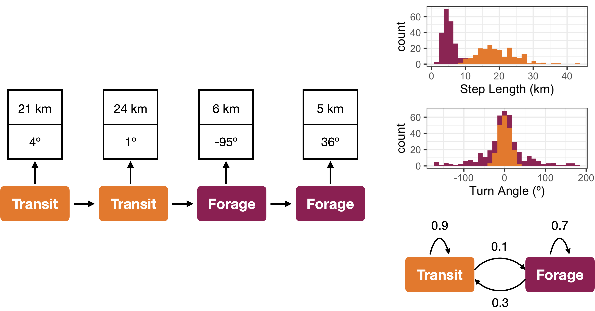
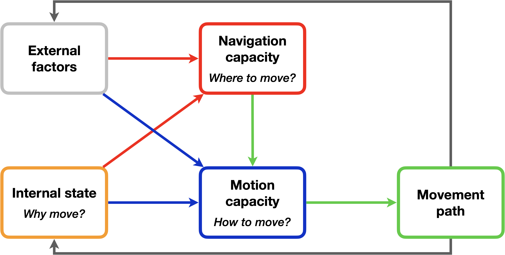
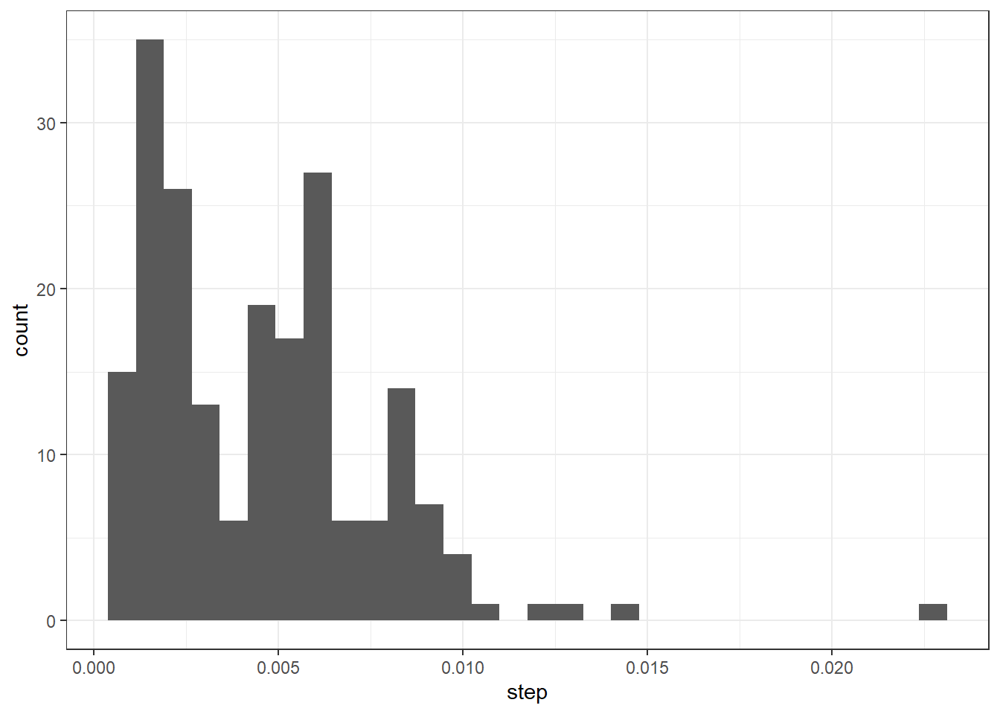
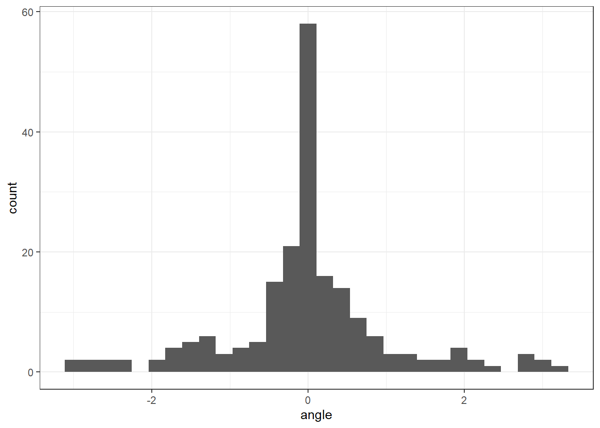
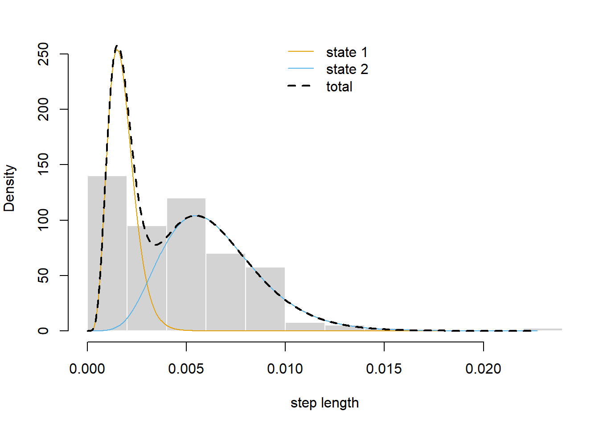
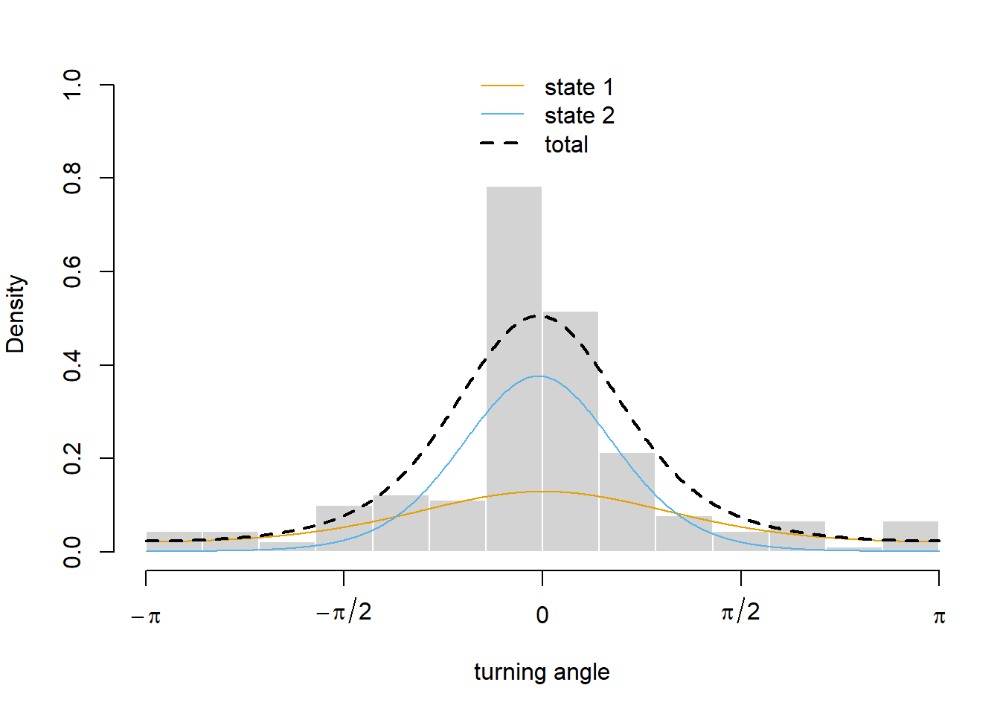
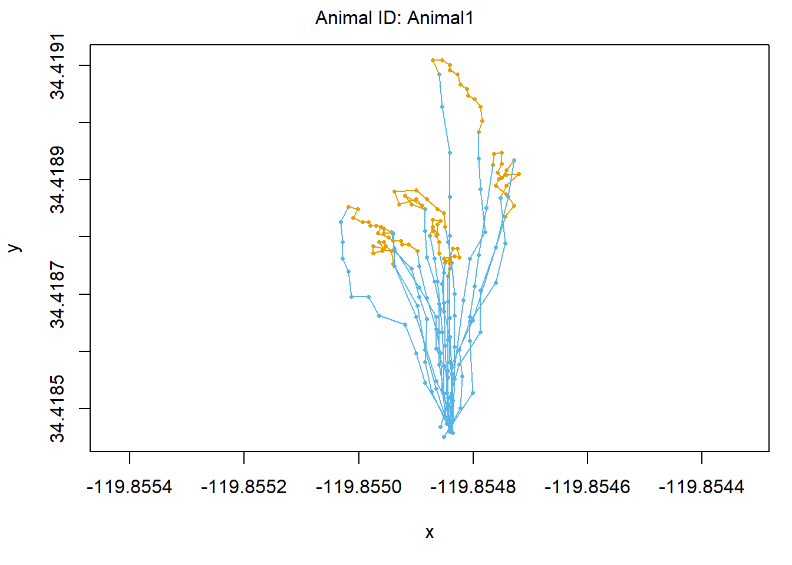

Today’s class is about using hidden Markov models (HMMs) to infer an animal’s behavioral state from its movement track. HMMs are statistical models with broad applications, well beyond ecology (Figure 1).

Figure 1: Hidden Markov models are statistical models that infer hidden states (e.g., behavior) from a sequence of observations (e.g., step lengths and turning angles).
We will use HMMs in the context of movement ecology, which is a scientific model (Figure 2).

Figure 2: The movement ecology framework is a scientific model describing how animals interact with their environments through movement.
Our goals for today are to:
Relate components of intuitive, scientific, statistical, and computational models.
Implement a hidden Markov model using quantitative movement metrics.
Interpret components of the statistical model in the context of the scientific model.
Picture the moment one of our seabirds (Cooper, Ella, or Sydney) slowed down from a sprint to a walk and bent down to look for a fishing lure.
Q1: Describe how you think this moment would be described by intuitive, scientific, and statistical models.
int. - we saw them physically saw them slow down and begin to turn
sci. - externally see an eddy and internally they begin to slow and change states
stat. - their step lengths begin to decrease in size as their turn angles increase in frequency
Setup
Run install.packages("moveHMM") at the console.
library(moveHMM)
Warning: package 'moveHMM' was built under R version 4.4.3
Loading required package: CircStats
Warning: package 'CircStats' was built under R version 4.4.3
Loading required package: MASS
Loading required package: boot
library(terra)
Warning: package 'terra' was built under R version 4.4.3
terra 1.8.42
Attaching package: 'terra'
The following object is masked from 'package:MASS':
area
── Conflicts ────────────────────────────────────────── tidyverse_conflicts() ──
✖ tidyr::extract() masks terra::extract()
✖ dplyr::filter() masks stats::filter()
✖ dplyr::lag() masks stats::lag()
✖ dplyr::select() masks MASS::select()
ℹ Use the conflicted package (<http://conflicted.r-lib.org/>) to force all conflicts to become errors
library(tidyterra)
Attaching package: 'tidyterra'
The following object is masked from 'package:MASS':
select
The following object is masked from 'package:stats':
filter
theme_set(theme_bw())
Load data
We will use two data sources in today’s class: the movement track (data/track.gpx) and an environmental raster describing the frontal features (data/frontal_intensity.tiff).
# Load tracktrack_gpx <-vect("data/track.gpx", layer ="track_points")# Convert to data frame (necessary for HMM)track <-tibble(lon =geom(track_gpx)[, "x"],lat =geom(track_gpx)[, "y"])# Load environmentfrontal_intensity <-rast("data/frontal_intensity.tiff")
# Prepare the data for model fittingtrack_prep <-prepData(track, coordNames =c("lon", "lat"))
Q2: What did prepData() do? What does this mean in the context of the scientific and statistical models?
# Visualize distribution of step lengthsggplot(track_prep, aes(step)) +geom_histogram()
`stat_bin()` using `bins = 30`. Pick better value with `binwidth`.
Warning: Removed 1 row containing non-finite outside the scale range
(`stat_bin()`).

# Visualize distribution of turning anglesggplot(track_prep, aes(angle)) +geom_histogram()
`stat_bin()` using `bins = 30`. Pick better value with `binwidth`.
Warning: Removed 2 rows containing non-finite outside the scale range
(`stat_bin()`).

Q3: What are reasonable starting parameters for the forage and transit states? Recall the track simulation from week 4.
Parameter
Forage
Transit
Step mean
0.001
0.005
Step s.d.
0.001
0.002
Angle mean
0
0
Angle concentration
1
5
# Fit a 2-state HMM to the tracktrack_hmm <-fitHMM(track_prep,nbStates =2,stepPar0 =c(0.001, 0.005, 0.001, 0.002),anglePar0 =c(0, 0, 1, 5))
# Visualize the components of the HMMplot(track_hmm, ask =FALSE)
Decoding states sequence... DONE



Q4: Match each plot to one of the components of the HMM. Note: one component is represented twice, one plot shows two components, and one component isn’t plotted.
Data - fig. 3
Hidden states - fig. 3
Emission distributions - fig. 1 and fig. 2
Transition matrix - not featured
Refine the statistical model
Our model currently infers behavior in a vacuum. Even though the classification of foraging and transit appears reasonable, we have no other context to interpret the behavior. Though our model may be accurate, it’s not adding much to our understanding of the scientific model. Let’s incorporate the frontal intensity data into the model to gain a deeper understanding of our seabirds’ movement ecology.
Q6: Using the since-if-then framing, write a hypothesis for the relationship between seabird behavior and frontal intensity.
Mine: Since seabirds traverse vast amounts of weather patterns, if fish tend to congregate around weather structures, then we can assume that they forage more often at these fronts.
Max: Since prey aggregate at mesoscale features, if seabirds get close to these features then seabirds are more likely to start foraging.
# First, extract the frontal intensity at the track locationstrack_front <- terra::extract(frontal_intensity, track_gpx)
Warning: [extract] transforming vector data to the CRS of the raster
We plotted the transition “matrix” which appears in the third figure
Q8: Interpret the new component in the context of the scientific and statistical models.
The closer to a front that a seabird gets the more probable it is to begin foraging.
Reflect
Q9:“All models are wrong, but some are useful.” What is one way this statistical model is “wrong” (i.e., omits or simplifies part of the scientific model) and one way that it is useful (i.e., adds to our understanding of the scientific model).
The statistical model is “wrong” in the fact that it emits the internal functions that occur to create these outcomes for the bird. We are looking more specifically at the external factors with these figures, but that does not account for all the information at play.
The statistical model is proven to be helpful in our understanding of the behaviors of the seabirds because it lays out a statistical method for which a seabird act in the presence of a front and eddy.